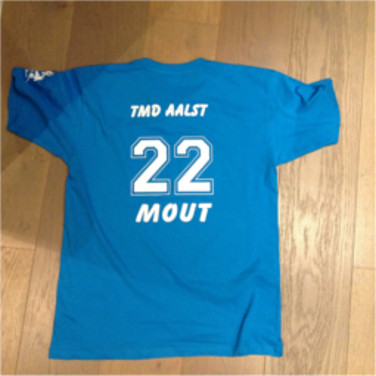
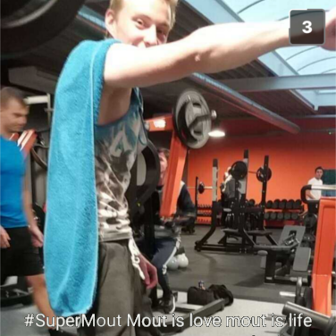
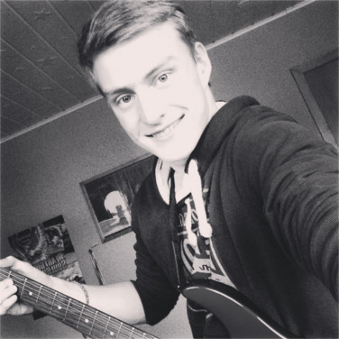

is een van mijn favoriete hobby's. Ik heb al vele sporten geprobeert en stuck voor stuk vind ik ze allemaal
zeer leuk, alleen spijtig dat ik door mijn blessure nooit lang een sport kan blijven uitvoeren. Ik heb onder
andere volgende sporten al beoefend:
. Nu ben ik vooral bezig met naar muziek te luisteren maar vroeger maakte ik zelf muziek. Ik speelde namelijk
gitaar. Later kwam daar ook ukelele bij. Voorlopig speel ik zo goed als niet meer maar moest ik terug
beginnen met een instrument dan zou ik graag piano/keyboard leren spelen.
. Ik heb sinds kleins af aan al een fascinatie gehad voor computers en de code erachter. Vandaar ook mijn keuze voor de richting
toegepaste informatica.
Floorball

Floorball Truitje TMD Aalst [2015]
Ik ben in contact gekomen met floorball dankzij een van mijn beste vrienden en school. Hij was degene die ons
les gaf op school. Ik vond het zo een leuke sport en (in tegenstelling tot de rest van mijn klas) had ik
er blijkbaar ook talent voor. Ik ben dan meteen maar bij hetzelfde team ingetreden. TMD, The Mighty Devils
Aalst. Daar heb ik een op en af half seizeon gehad en uiteindelijk na 1 jaar al moeten stoppen vanwege een
blessure die ik opgelopen had. Spondylolyse op L4 voor de dokters die dit lezen. Ik heb meerdere malen geprobeerd
terug te beginnen met de sport maar met einig succes. na een half uurtje dribbelen en wat schieten naar doel
had ik opnieuw last. Moest ik kunnen zou ik nu waarschijnlijk toch niet meer beginnen. Om op deze leeftijd
nog de basis terug onder de knie te moeten krijgen, zit je hopeloos veel achter en ben je ook eerder een
last dan een opbrengst op een match. Toch blijf ik in contact met de sport door hier en daar nog eens naar
een match van mijn oude team te gaan kijken! Dan krijg ik natuurlijk ook direct zeer veel zin om zelf op
het veld te gaan staan en spelen, maar helaas blijft het bij mij tot supporteren en commentaar geven ;)
Tennis
Ik in mijn 'jonge' jaren die tennis speelt
Ik ben in contact geraakt met tennis door een tennisstage samen met mijn broer te volgen in de club niet ver
van mij. In het begin keer ik er erg tegenop maar uiteindelijk ben ik zeer blij dat ik daar naartoe geweest
ben, aangezien ik daar mijn beste vriend leren kennen heb! Ik heb nooit echt de motivatie gehad om competitief
te spelen en als ik een wedstrijd moet spelen sterf ik dan ook altijd van de stress. Ik hou het liever als
hobby!
Waar te beginnen met dez hobby? Ik denk op mijn 4
de
levensjaar. De allereerste keer gaan Skiën, spannend! Meteen verslaafd end dus ook geprobeert om sinds elk jaar te gaan!
Nu na een 10 jaar werd het wel eens tijd voor iets nieuws. Ben dan maar begonnen met snowboarden. De eerste
3 dagen waren echt hel! Vallen, vallen en nog eens vallen! Mijn staartbeentje was heel de tijd aan het roepen:
"Stop met deze onozele sport!", maar nee, wij geven niet op! En kijk nu, ik snowboard liever dan ik ski!
Diepsneeuw, jumps, halfpipes, ... noem maar op, zolang ik mij maar amuseer! Ik durf ook veel meer op mijn
plank. Zo heb ik ondertussen al een paar snowparks gedaan terwijl ik dat nooit wou doen met skies. Ook in
de diepsneeuw ga ik veel liever met. naar achtere leunen en gewoon gaan! Vallen? Geen probleem, dat doet
toch geen pijn.
Voor de snowboarders onder ons: ik heb liever een flexiebelere plank, ik weet het, minder snelheid maar de
jumps voelen veel beter aan en de onverwachte ijsblokken komen minder hard aan (moet opnieuw rekening houden
met mijn rug hier dus nog een voordeel) Als snelste van het gezin moet ik vaak wachten op 'de oudjes'. Erg
vind ik dit niet maar ben toch blij als mijn beste vriend,
Tom, mee gaat om mij te vergezellen op de pistes! Pas maar op als je ons tegenkomt, want geen enkele
piste is nog veilig!
Fitness

Foto van mij met mijn zeer stijlvolle outfit... (danku
Tom!) [2016]
Biceps, triceps, quadriceps, legday, ... Heel wat begrippen die in het dagelijkse leven van een gemotiveerde
fitnesser terugkomen. Meestal niet omdat ze weten waarover ze spreken maar eerder om op te scheppen en te
doen alsof ze er iets van weten. Gelukkig is er ook uitzondering op de regel. Fitness deed ik als last resort
optie om toch nog in beweging te blijven. Mijn blessure (cf. floorball) maakt het mij niet gemakkelijk. Met
mijn beste vriend
Tom bijna dagelijks met machines en gewichten werken was prettiger dan verwacht. Elke keer afzien met
mijn zelfgemaakte buikreeks (als je niet elke dag je buikspieren treint, dan krijg je nooit een sixpack!)
Dat waren tijden! Uiteindelijk ben ik ook hier jammer goenoeg ook mee moeten stoppen :( (opnieuw, danku blessure...)
Toch ben ik van plan eens ik terug kan sporten (wie weet hoe lang dat nog duurt), deze hobby terug op te
pakken (eigenlijk ben ik stiekem al terug gestart door thuis met gewichten overdreven lange reeksen vol te
houden) en dan kunnen we terug naar de GAINS!!!
Gitaar

Ik en mijn elektrische gitaar (vooral ik dan) [2014]
Ah, het wondere instrument, de gitaar. Ik ben ben al aan het spelen en oefenen sinds 2006. Heb 2 diploma's behaald
bij de muziekacademie, ben nadien nog 2-3 jaar privé les gaan volgen en toen begon het uiteindelijk wat tegen
te steken. Elke week het lied dat ik meekreeg oefenen, daar had ik geen zin meer in. Ik wou gewoon spelen
waar ik zin in had. Dus ben ik gestopt met oefenen en heb ik eigenlijk mijn gitaar links laten liggen. Heb
mij een ukelele gekocht (zo een keline gitaar met 4 snaren en
NEE GEEN BANJO!). Zeer grappig instrument, perfect voor op het strand, bij een ondergaande zon en eventueel
een kampvuur. Om eerlijk te zijn, veel spelen doe ik de laatste tijd niet meer, ik wissel nu en dan tussen
elektrische en klassieke gitaar en daartussen dan nog eens de ukelele.
Ik heb al een tijde gedacht om te beginnen met keyboard, maar mezelf kennende (en vooral notenleer kennende),
weet ik dat hiervoor veel geoefend moet worden en dit zie ik mezelf niet direct doen.
IT
Hierbij hoef ik geen afbeelding te plaatsen, iedereen kan zich wel wat bij IT voorstellen en iedereen zijn voorstelling
is ook anders. Om snel een aantal verkeerde beelden uit de weg te ruimen: "Neen, ik ga u computer niet fixen,
ik codeer en schrijf webpagina's!" Mijn favorite vakken zijn webapplicaties en Object-Oriënted Programming.
Ik ben zeer blij met de richting die ik gekozen heb en hoop om hier nog verder op voort te bouwen (eventueel
master, ...)